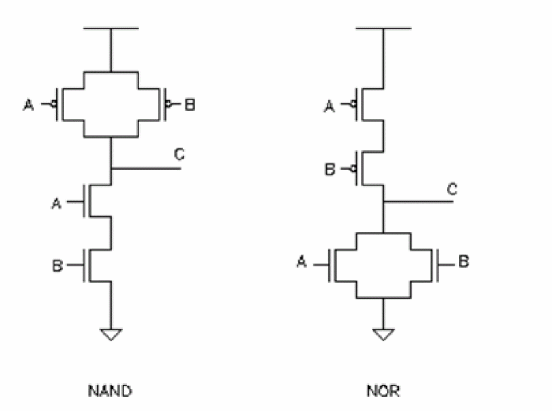
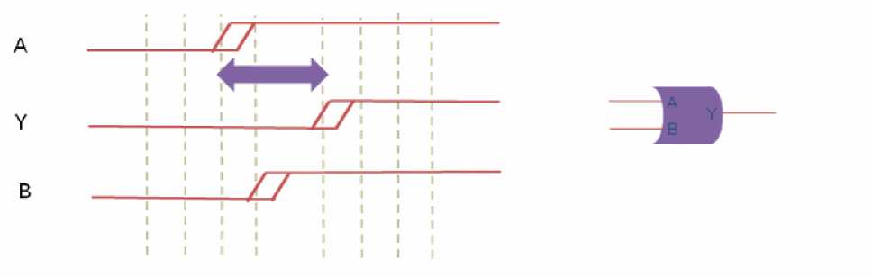

Analysis Of Simultaneous Switching Inputs - SSI
SSI Overview
Multiple input cells that have an underlying transistor topology with parallel P or N device pulling the output up or down respectively, can exhibit accelerated delays when multiple inputs are switching in the same direction. If a secondary input switches within a specified delay window with respect to the primary transition, the delay from the initial transition will be smaller.
The example below shows a NAND gate implementation with parallel PMOS pull-up transistors, and a NOR gate with parallel NMOS pull-down devices:
Figure -76 NAND gate implementation

Simultaneous falling transitions at the NAND gate’s A and B inputs will accelerate the rising output transition. Conversely, rising transitions of the NOR gate’s A and B inputs within a specified proximity window will accelerate the output falling delay.
Current characterization approaches typically consider a single-input switching. In real-world scenarios where multiple inputs of a cell can be switching at the same time, the delay of a particular arc can be substantially less.
Faster delays on early paths increase pessimism. Guard-banding approaches can be used to derate the early paths – but doing this globally can lead to overall increased pessimism over the whole design.
With SSI enabled, simultaneous switching effects can be detected by the software and specific SSI derating factors provided by the user can be applied in those cases. When these timing-guided derating assertions are applied, the overall guard-band derating can be reduced – resulting in an overall less pessimistic analysis.
Implementation
The implementation of the simultaneous switching input (SSI) derating functionality involves additional syntax provided to the set_timing_derate constraint, library properties for defining the switching sensitivity delay window, and a set of heuristics of determining which input phase arrival times should be considered as interacting, and therefore, subject to possible SSI derating.
SSI Derating Command Syntax
The SSI derating is controlled by the set_timing_derate –input_switching parameter. You can use this parameter to configure SSI derating on specific library cells when they are analyzed on early data paths, typically, the data paths for Hold analysis. For example,
set_timing_derate 0.5 –fall –data –early –input_switching [get_lib_cells NOR2X]
By using additional set_timing_derate options, you can configure the derate behavior for different delay corners or operating voltage domains:
set_timing_derate 0.5 –fall –data –early
–delay_corner tt_800 -power_domain pdDefault
–input_switching [get_lib_cells NOR2*]
Controlling the SSI Proximity Window
In order for a secondary signal transition to affect the delay from the initial input switching, it must occur within a certain proximity of the first input’s transition. By default, the proximity window is equivalent to the early input-to-output delay from the first transitioning input pin.
In the diagram below, pin A is the first input to switch. For a transition at B to affect the delay from A to Y, it must transition after A has transitioned, but before Y has completed its transition to the new state.
Figure -77 SSI Proximity Window

The switching proximity window can be configured by utilizing library-level user-defined properties.
The k_input_switching_window_rise and k_input_switching_window_fall properties need to be first defined using the following syntax:
define_property -type float -object_type lib k_input_switching_window_rise
define_property -type float -object_type lib k_input_switching_window_fall
You can then set the proximity factor on a per library basis:
set_property [get_libs slow] k_input_switching_window_rise 1.1
set_property [get_libs slow] k_input_switching_window_fall 1.1
The property definitions and settings are preserved persistently in the SDC file if the design is saved.
Heuristics for Selecting Interacting Clock Phases
Based on the clocking relationships of the signals arriving on the input pins of a cell configured for SSI, the software will determine if the SSI derate should always be applied, never be applied, or applied based on the evaluation of the proximity window. Conservative analysis requires applying the SSI derate, unless it can be shown that the inputs are not interacting. The following table summarizes the situations where SSI should be applied or not applied:
Return to top